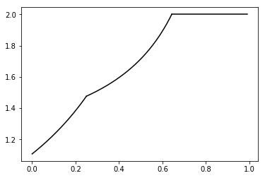

-
► Interpolating between dimensions, arXiv
Proceedings of Fractal Geometry and Stochastics VI, Birkhäuser, Progress in Probability, 2021.
-
► New dimension spectra: finer information on scaling and homogeneity (with H. Yu), arXiv
Advances in Mathematics, 329, (2018), 273-328.
-
► Intermediate dimensions (with K. J. Falconer & T. Kempton), arXiv
Mathematische Zeitschrift, 296, (2020), 813-830.
-
► The Fourier dimension spectrum and sumset type problems, arXiv
submitted.
-
► A new perspective on the Sullivan dictionary via Assouad type dimensions and spectra (with L. Stuart), arXiv
Bulletin of the American Mathematical Society (to appear).
-
► The fractal structure of elliptical polynomial spirals (with S. A. Burrell and K. J. Falconer), arXiv
Monatshefte für Mathematik, 199, (2022), 1-22.
-
► Projection theorems for intermediate dimensions (S. A. Burrell & K. J. Falconer), arXiv
Journal of Fractal Geometry (to appear).
-
► The Assouad spectrum and the quasi-Assouad dimension: a tale of two spectra (with K. E. Hare, K. G. Hare, S. Troscheit & H. Yu), arXiv
Annales Academiæ Scientiarum Fennicæ Mathematica, 44, (2019), 379-387.
-
► Assouad type spectra for some fractal families (with H. Yu), arXiv
Indiana University Mathematics Journal, 67, (2018), 2005-2043.
|  |
 |
Plots of the Assouad spectrum (left) and intermediate dimensions (right) for an elliptical polynomial spiral. The Assouad spectrum typically has an increasing part and then a constant part, and the phase transition between these two regimes often has particular geometric significance. The smaller phase transition typically does not appear and was a surprise observation for this family of set.